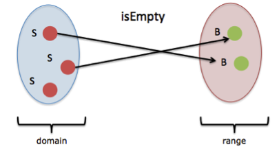

function sumOfSquares(list) {
let result = 0
for (let i = 0; i < list.length; i++) {
result += square(list[i])
}
return result
}
console.log(sumOfSquares([2, 3, 5]))
let square = x => x * x
let sum = (a, b) => a + b
// with map/compose tools:
let sumOfSquares = compose(map(square), sum)
console.log(sumOfSquares([2, 3, 5]))
// don't use var anymore
var x = 1
// use let or const
let x = 1
const FIXED = 42
// in ES6
let idem = a => a
let odds = evens.map(v => v + 1)
let pairs = evens.map(v => ({ even: v, odd: v + 1 }))
let nums = evens.map((v, i) => v + i)
// in ES5
var idem = function(a) { return a }
var odds = evens.map(function (v) { return v + 1 })
var pairs = evens.map(function (v) { return { even: v, odd: v + 1 } })
var nums = evens.map(function (v, i) { return v + i })
function f (x, y = 7, z = 42) {
return x + y + z
}
console.log(f(1)) // 50
function f(x, y, ...a) {
return (x + y) * a.length
}
console.log(f(1, 2, "hello", true, 7)) // 9
let params = [ "hello", true, 7 ]
let other = [ 1, 2, ...params ] // => [ 1, 2, "hello", true, 7 ]
console.log(f(1, 2, ...params)) // 9
let str = "foo"
let chars = [ ...str ] // [ "f", "o", "o" ]
const x = 100
const y = 200
let obj = { x, y }
console.log(obj) // { x: 100, y: 200 }
let zap = () => 'bar'
let obj = {
check (a, b) { /* function code */ },
foo: "bar",
[ "prop_" + zap() ]: 42
}
console.log(obj) // { "foo": "bar", "prop_bar": 42, "check": [Function] }
let name = 'Jhon Snow'
console.log(`You know nothing, ${name}`)
let customer = { name: 'Foo' }
let card = { amount: 7, product: 'Bar', unitprice: 42 }
let message = `Hello ${customer.name},
want to buy ${card.amount} ${card.product} for
a total of ${card.amount * card.unitprice} bucks?`
console.log(message)
Functions as values that can be stored, passed as arguments and created/returned from functions.
// a function expression stored in a variable
const double = (a) => a * 2
console.log(double(3)) // 6
// a function as a returned value
const createSomeFunction = () => (a) => (a * a) - a
const sameVal = createSomeFunction()
sameVal(1) // 0
sameVal(2) // 2
sameVal(3) // 6
var onReady = function() {
$('#info').html('...')
}
$(onReady)
var myObj = {
doSomething: function() {
//...code code code
},
doImportanStuff: function() {
//... important code
}
}
Functions that can accept functions as arguments and/or return a function
document
.getElementById("clicker")
.addEventListener("click", () => alert("you've clicked the clicker"))
const addMood = (mood) => (str) => `${str}, ${mood}`
const happy = addMood(" and I'm happy!")
const sad = addMood(" and I'm sad")
console.log(happy('My name is Earl')) // My name is Earl, and I'm happy
console.log(sad('I have to work')) // I have to work, and I'm sad
fs.readFile('/etc/passwd', (err, data) => {
if (err) throw err
console.log(data)
})
const data = [1, 2, 3, 4, 5]
const reducerFn = (a, b) => a + b
const result = data.reduce(reducerFn, 0)
console.log(result) // 15
Function that does something other than returning a value.
let a = 0
const incA = () => {
a = a+1 // state changing? (╯°□°）╯︵ ┻━┻
return a
}
console.log(incA(), incA()) // 1, 2
const testA = () => (a < 3) ? null : a // side effect: reading from environment
console.log(testA()) // null
const usedEverywhere = () => alert('This is also a side effect')
console.log(usedEverywhere())
Functions that has no side effects. It depends only on the input provided, does not inflict changes beyond its scope.

const mult = (a, b) => a * b
const double = (a) => a * 2
const giveMeFun = () => (a) => a
For a given sets of arguments, the same code should always output the same value, only by changing arguments can an output value be different.
const mult = (a, b) => a * b
const result = mult(2, 3) + mult(4, 5)
const result1 = 6 + mult(4, 5)
const result2 = 6 + 20
// => result === result1 === result2
Inability for variables to change their value once created. All things created stay constant.
// in javascript strings are immutable
const str = 'You can\'t change this'
const modStr = str.replace('You can\'t', 'I did')
console.log(str) // "You can't change this."
console.log(modStr) // "I did change this."
// other structres are mutable
const arr = []
const v2 = arr.push(2)
console.log(v2) // 1 .... why JavaScript? why?!
const sentence = ['please', 'don\'t', 'touch', 'me', 'javascipt']
sentence.splice(0, 3, 'oh', 'you\'ve', 'touched' )
console.log(sentence) // Array [ "oh", "you've", "touched", "me", "javascipt" ]
Ability of a function to take one argument and return a new function until it receives all it’s arguments.
const name = function (last) {
return function (first) {
return last + ', ' + first
}
}
// the same function
const name = last => first => `${last}, ${first}`
name('Curry')('Haskell') // Curry, Haskell
name('Norris')('Chuck') // Norris, Chuck
Calling a function with only some of its arguments is called partial application.
var name = function (last) {
return function (first) {
return last + ', ' + first
}
}
var partial = name('Norris')
partial('Chuck') // Norris, Chuck
partial('Adam') // Norris, Adam
Iteration in functional languages is usually accomplished via recursion. Recursive functions invoke themselves, allowing an operation to be performed over and over until the base case is reached.
Ability to avoid allocation a new stack frame for a function call. Most commonly is a tail-recursion, where a recursive function uses constant stack space
// cannot be optimized
const factorial = x => {
if (x <= 0) return 1
return x * factorial(x-1) // (A) not tail call
}
// can be optimized
const factorial = n => doFact(n, 1)
const doFact = (n, total) => {
if( n <= 0 ) return 1
if( n <= 1 ) return total
return doFact(n-1, n*total) // (B) tail call
}